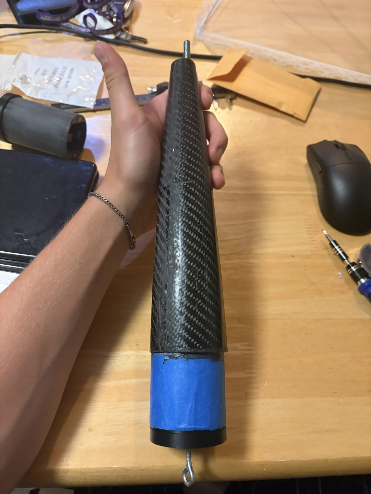
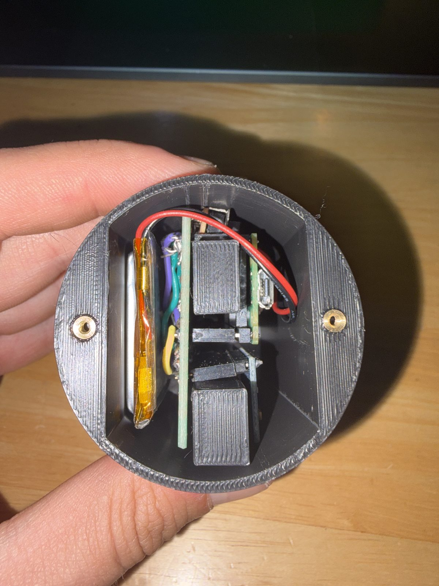
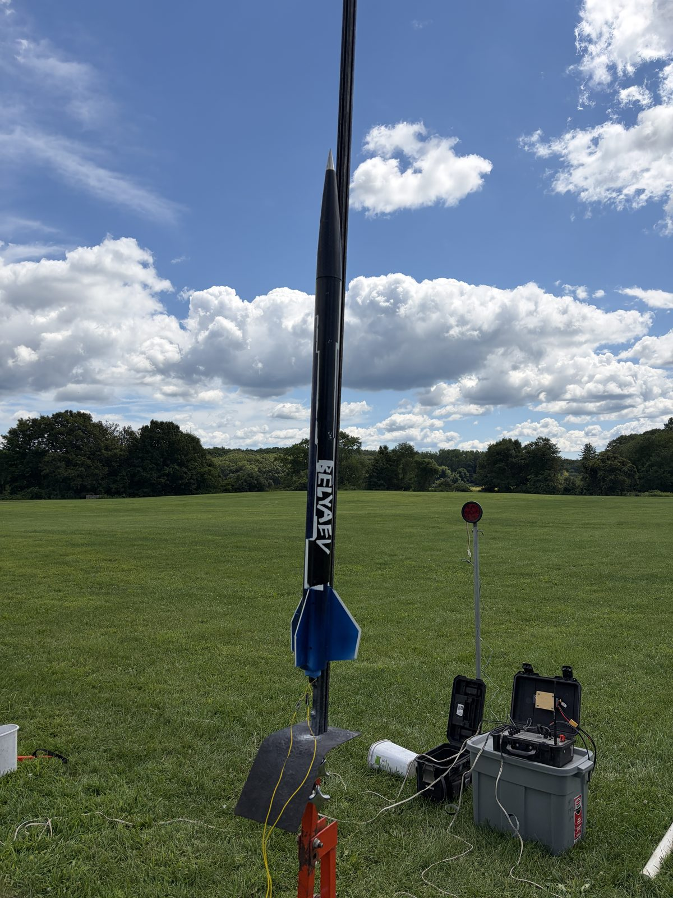
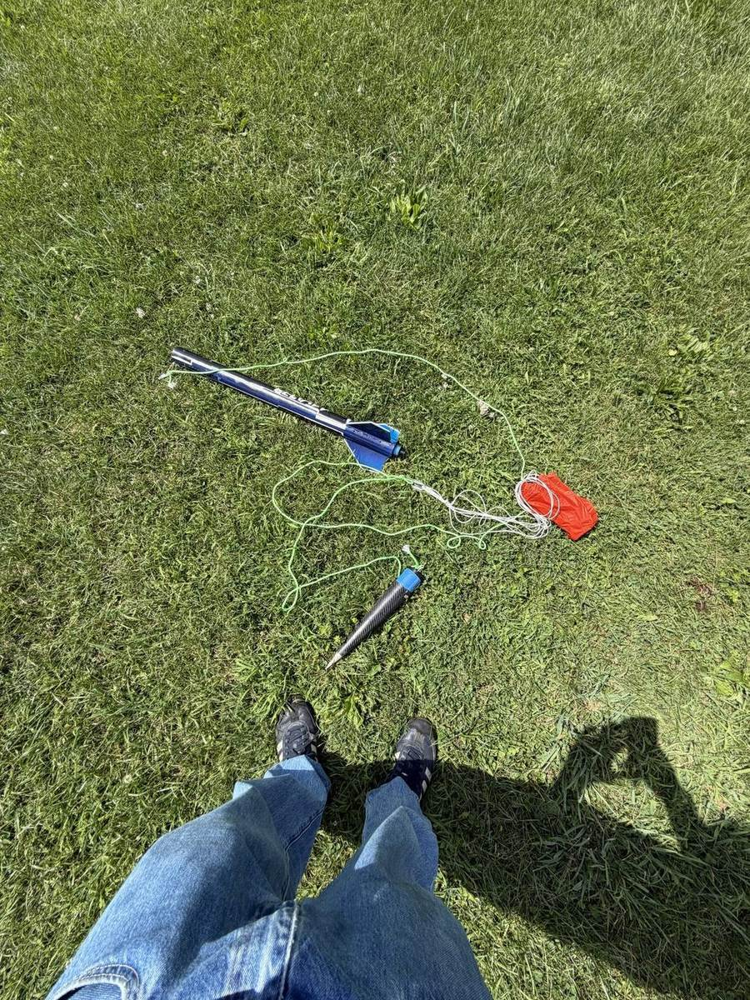
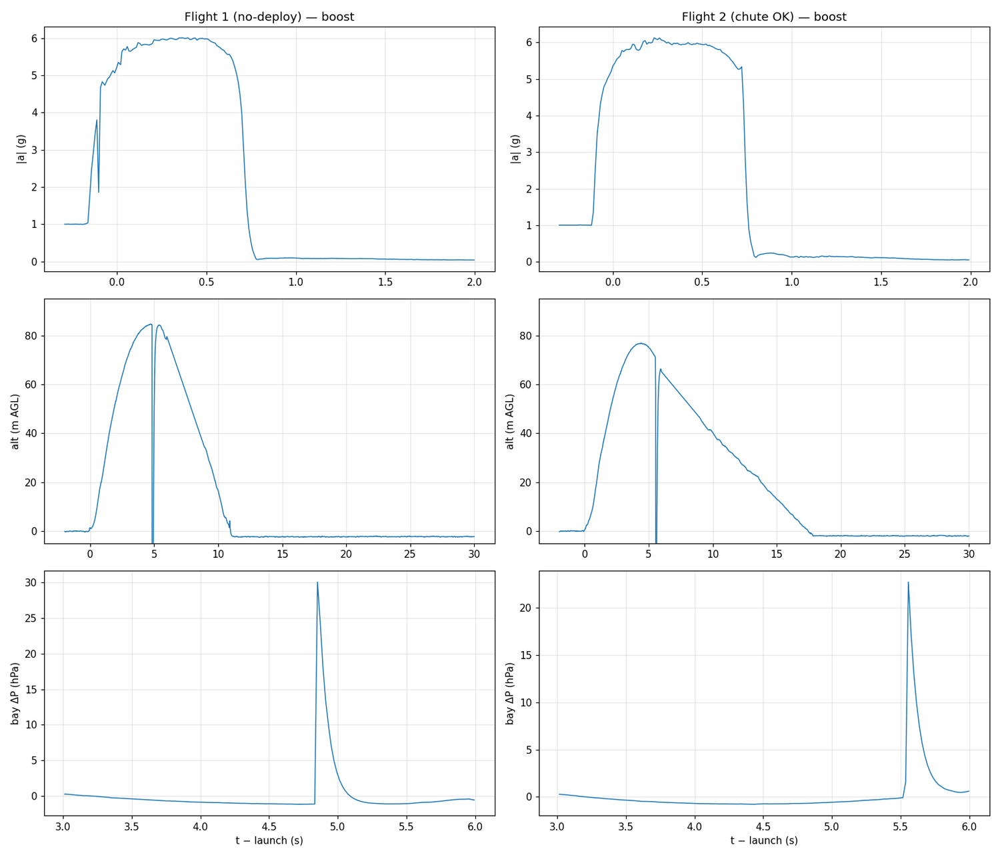
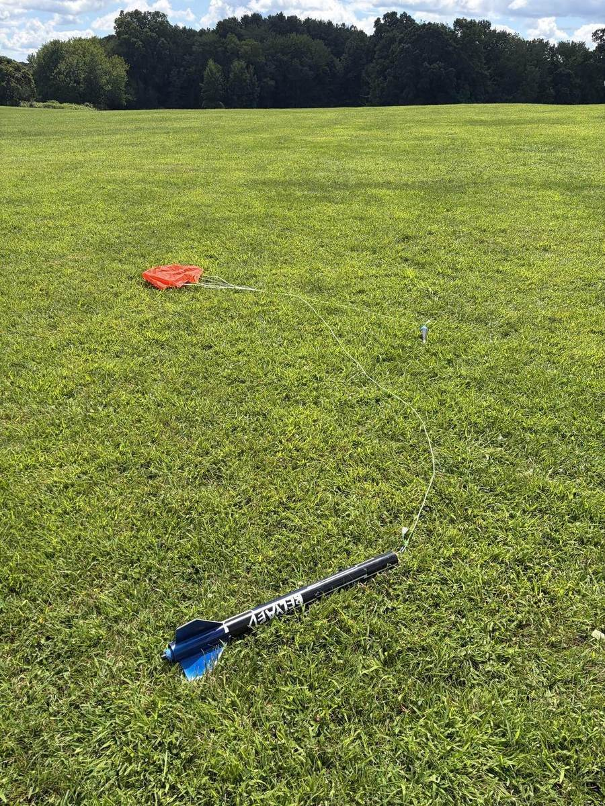
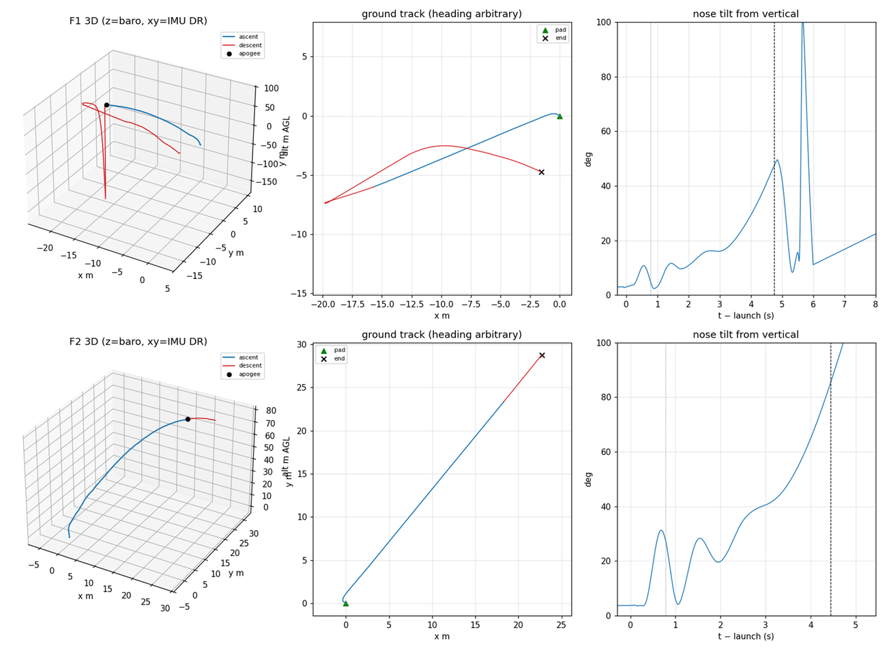

Two Flights, One Afternoon
Personal Project · Flown 15 Aug 2026
Left: flight 1 — the chute never opened. Right: flight 2, an hour later — clean deploy and recovery.
Overview
I flew the same 2.3-inch rocket twice in one afternoon at a club launch, carrying the carbon nosecone and flight computer I built, to come home with measurements instead of estimates. Over the campaign I:
- Integrated the nose section — carbon shell, printed coupler, and instrument housing, about 250 g
- Flew both flights on the AeroTech F67W-4 from a club pad and rail
- Diagnosed the flight 1 deployment failure from the logged data
- Recovered the flight 1 log from a reformatted flash volume
- Repacked the chute and reflew within the hour
- Reconstructed both trajectories in 3D from the raw logs
Goals & Requirements
- Fly the complete stack — airframe, molded nosecone, custom avionics — end to end
- Measure boost acceleration, top speed, and apogee onboard rather than simulate them
- Hold 100 Hz IMU / 50 Hz barometer logging through every flight phase
- Recover the vehicle and the data from both flights
- Fly twice in one session to test flight-to-flight repeatability
Flight day
The nose section is where the other builds converge: the carbon shell seats over the printed coupler, and the flight computer rides in its printed housing on the eye-bolt recovery load path. Flight card, RSO inspection, then the rail.
{kind=link}

Carbon shell over the printed coupler
{kind=link}

Housing into the airframe
{kind=link}

Vertical on the rail
Flight 1’s ejection charge fired on time — 4.0 s after burnout, 0.1 s after barometric apogee, with a +31 hPa pressure spike in the bay to prove it — but the chute never left the tube and the rocket came down tumbling. The failure was mechanical, not timing, and the airframe survived reflyable. Eight minutes after landing I cut power while the logger was still committing; the FAT corrupted and the board reformatted its drive on the next boot. Because a reformat rewrites allocation tables rather than data blocks, I raw-imaged the volume read-only and carved the log back out of the image.
{kind=link}

Flight 1 as found — chute still in its packed wad
{kind=link}

Both flights raw — boost, altitude, bay pressure
Flight 2 flew the same rocket and motor about an hour later after a repack: clean deploy and a 5.1 m/s descent under canopy. The opening shock logged 15.5 g, captured unclipped — the load at a ~10 m/s deploy, since the charge fired 1.1 s past apogee.
{kind=link}

Flight 2 as found — canopy out, airframe intact
{kind=link}

Reconstructed paths, ground tracks, nose tilt
Reconstruction
I rebuilt both flights from the raw logs: gyro bias re-estimated from 60 s of still pad data, attitude integrated at 100 Hz, body acceleration rotated to the world frame and double-integrated. The barometer was held out as an independent check — IMU-only altitude agreed with it to +1.3 m (flight 1) and +3.3 m (flight 2) at apogee. It settles the apogee gap: flight 2’s nose was 27.6° off vertical at burnout versus flight 1’s 4.6° — weathercocking into wind, arcing ~30 m downrange on the same energy.
The solutions are quoted from launch to ejection/deploy only, and with no magnetometer aboard, headings are relative, not compass bearings.
Interactive replay of both reconstructed flights — drag to orbit, scroll to zoom, PLAY runs both on a shared clock. Open full-screen →
Outcomes
- Boost 6.0 / 6.1 g and max velocity 37.9 / 38.5 m/s — repeatable to about 2% flight-to-flight
- Barometric apogees 84.6 / 76.9 m — the gap is weathercocking, not performance
- Descent 17.2 m/s ballistic vs 5.1 ± 0.3 m/s under canopy — direct proof the repack fixed deployment
- 47,000 IMU + 24,000 barometer records recovered from the reformatted flash; pressure cross-check +0.27 hPa
Scope note: flight 1’s landing impact is ≥21.2 g — a floor, not a measurement, because one accelerometer axis clipped at ±16 g.
This campaign is the capstone of three builds: the L1 certification that started the program, the molded carbon nosecone, and the flight computer that measured all of it.